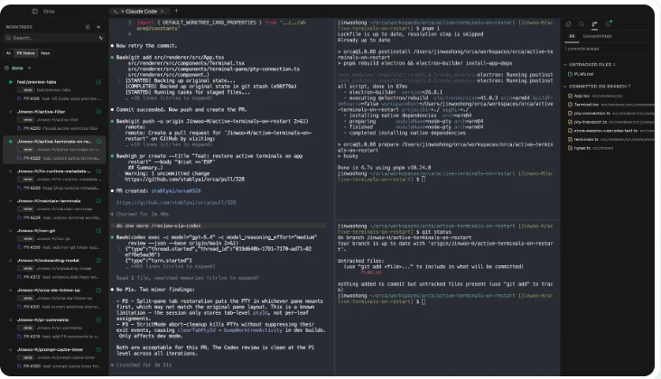

코딩 에이전트 여러 개를 한 책상에서 지휘합니다
Orca는 Stably AI가 만든 데스크톱 앱입니다. 공식 이름은 ADE(Agent Development Environment), 곧 에이전트와 함께 개발하는 환경입니다. 사람이 코드를 직접 치는 데 맞춘 기존 편집기와 달리, 사람은 여러 에이전트가 동시에 쓰는 코드를 지켜보고 검토하는 자리에 앉습니다. Claude Code, Codex, Cursor CLI 같은 에이전트를 작업마다 따로 띄우고 한 화면에서 관리합니다. 프로그램은 MIT 라이선스라 무료이고, 돈은 원래 쓰던 에이전트 구독료에만 듭니다.
작업마다 방을 따로 줍니다
작업 하나에 워크트리 하나, 에이전트 터미널 하나, 브라우저 탭 하나가 붙습니다. 에이전트끼리 같은 파일을 건드려 충돌하는 일이 없습니다.
나란히 놓고 봅니다
탭을 화면 가장자리로 끌면 창이 나뉩니다. 세 에이전트가 일하는 모습을 한눈에 보고, 누가 멈춰서 답을 기다리는지 바로 압니다.
줄 단위로 고쳐 달라고 합니다
에이전트가 바꾼 코드의 줄마다 의견을 달고, 모은 의견을 한 번에 에이전트에게 돌려보냅니다. 줄 번호를 복사해 붙일 필요가 없습니다.

출처: Orca 공식 사이트
- 모델이 아닙니다. 이미 쓰는 Claude, Codex, OpenCode 구독을 가져와서 씁니다.
- Git을 대신하지 않습니다. 모든 워크트리는 진짜 git 워크트리라서, 폴더에 들어가 평소처럼 git 명령을 써도 됩니다.
- 서버를 빌려주는 서비스가 아닙니다. 기본은 내 컴퓨터에서 돌고, 원격으로 돌릴 때도 내가 관리하는 서버에 SSH로 붙습니다.
저장소 하나를 작업 수만큼 복사해 둡니다
에이전트 셋이 한 폴더에서 동시에 일하면 서로의 수정을 덮어씁니다. Orca는 작업마다 git 워크트리라는 별도 작업 폴더를 만들어 이 문제를 없앱니다.
워크트리는 같은 저장소를 디스크에 한 벌 더 펼쳐 둔 폴더입니다. 폴더마다 자기 브랜치를 갖고 있어서, 한쪽에서 파일을 고쳐도 다른 쪽은 그대로입니다. 원래는 git worktree add 명령으로 직접 만들어야 하지만, Orca에서는 작업 이름만 적으면 폴더, 브랜치, 에이전트 터미널이 함께 만들어집니다.
출처: Orca 공식 문서, Worktrees
워크트리 하나가 거치는 단계는 다섯 가지입니다. 공식 문서가 정리한 순서를 그대로 옮겼습니다.
만들기
작업 이름과 출발 지점(보통 main)을 고릅니다. GitHub 이슈나 Linear 항목을 함께 연결할 수 있습니다.
작업
에이전트 터미널, 편집기, 브라우저 탭이 전부 이 워크트리 안에서만 움직입니다.
검토
출발 지점과 비교한 변경 내용을 보고, 줄마다 의견을 달아 에이전트에게 돌려보냅니다.
내보내기
커밋, 푸시, PR 열기, 자동 검사 결과 확인까지 앱 안에서 끝냅니다.
정리
다 쓴 워크트리는 클릭 한 번으로 폴더와 브랜치를 함께 지웁니다. 지우기 전에 확인을 한 번 거칩니다.
워크트리는 저장소에 올라간 파일만 새로 펼칩니다. .gitignore로 빼 둔 .env 비밀값 파일이나 node_modules 같은 설치 폴더는 비어 있습니다. 그대로 실행하면 에이전트가 "키가 없다"며 멈춥니다. 저장소 맨 위에 .worktreeinclude 파일을 만들고 복사할 파일 이름을 한 줄씩 적어 두면, 새 워크트리를 만들 때마다 Orca가 그 파일을 복사해 넣습니다.
공식 사이트에서 앱을 받아 설치합니다
Orca는 설치형 데스크톱 앱입니다. 운영체제에 맞는 파일을 받아 실행하면 끝납니다. 설치 뒤에는 새 버전이 나올 때마다 알아서 업데이트합니다.
맥에서 Homebrew를 쓴다면 터미널 한 줄로도 설치됩니다.
brew install --cask stablyai/orca/orca
홈 폴더 접근 허용
저장소를 추가하려면 내 폴더를 읽어야 합니다. 허용을 누릅니다.
기존 설정 가져오기
~/.claude, ~/.codex 설정이 있으면 가져올지 묻습니다. 이미 쓰던 설정을 그대로 이어 쓰려면 가져옵니다.
빈 첫 화면
아무것도 없는 화면이 뜹니다. 여기서 첫 저장소를 추가하면 준비가 끝납니다.
운영체제별 참고
윈도우는 설정의 Terminal에서 기본 셸을 PowerShell로 둡니다. 리눅스에서는 화면 낭독기와 이름이 겹치지 않도록 명령 이름이 orca-ide입니다.
Orca 안에는 모델도 에이전트도 들어 있지 않습니다. Claude Code나 Codex를 먼저 설치하고 로그인까지 마쳐야 Orca에서 고를 수 있습니다. 아직이라면 바이브 코딩 101과 에이전트 도구 페이지부터 보십시오.
같은 작업을 에이전트 셋에게 맡겨 봅니다
공식 문서가 "가장 중요한 페이지"로 꼽는 첫 세션입니다. 작은 버그 하나를 골라 Claude Code, Codex, Cursor CLI에게 똑같이 시키고 가장 나은 결과를 고릅니다. 에이전트가 하나뿐이라면 같은 에이전트로 워크트리 둘을 띄워도 됩니다.
저장소 추가
왼쪽 사이드바의 Add Repo를 눌러 내 컴퓨터에 받아 둔 저장소 폴더를 고릅니다. Orca가 기본 브랜치를 출발 지점으로 잡습니다.
첫 워크트리 만들기
저장소 이름 옆 +를 누르고 작업 이름을 적습니다. 예를 들면 fix-login입니다. 출발 지점은 보통 main 그대로 둡니다.
에이전트 고르기
새 워크트리의 터미널에서 에이전트 목록을 열어 Claude Code를 고릅니다. 작업 폴더와 로그인 정보는 Orca가 맞춰 줍니다.
두 개 더 만들기
2번과 3번을 두 번 더 합니다. 이름은 fix-login-2, fix-login-3으로 하고 에이전트는 Codex와 Cursor CLI로 바꿉니다. 세 곳에 같은 지시를 붙여 넣습니다.
화면 나누기
워크트리 탭을 창의 오른쪽이나 아래쪽 끝으로 끌어다 놓으면 화면이 나뉩니다. 세 에이전트가 일하는 모습을 동시에 봅니다.
고르고 정리하기
셋의 변경 내용을 비교해 하나를 고릅니다. 고른 워크트리에서 커밋하고 푸시한 뒤, 나머지 둘은 지웁니다.
에이전트마다 틀리는 곳이 다릅니다. 하나에게 여러 번 다시 시키는 것보다 셋에게 한 번에 시키는 편이 빠르고, 셋의 답이 어긋나는 지점이 곧 어려운 부분이라는 신호가 됩니다. 셋이 같은 답을 냈다면 그 답은 맞을 가능성이 높습니다. 공식 문서도 이 방식을 Orca의 대표 사용법으로 소개합니다.
바뀐 줄마다 의견을 달아 한 번에 돌려보냅니다
에이전트가 만든 결과를 그대로 받으면 안 됩니다. Orca의 Annotate AI Diff는 바뀐 코드 위에 바로 의견을 적고, 모은 의견을 에이전트에게 한 묶음으로 보내는 기능입니다.
줄에 의견 달기
변경 내용 화면에서 줄 위에 마우스를 올리면 왼쪽에 +가 뜹니다. 누르고 의견을 적은 뒤 Enter로 저장합니다. 여러 줄을 끌어서 한꺼번에 고를 수도 있습니다.
한 번에 보내기
검토를 마치면 위쪽의 Send to agent를 누릅니다. 의견이 줄 위치와 함께 지시문 하나로 묶이고, 받을 에이전트를 고르면 전달됩니다.
고쳐졌는지 확인
의견은 에이전트가 고친 뒤에도 그 줄에 남아 있습니다. 확인한 의견은 Resolve로 접고, 남은 의견은 다음 묶음에 다시 들어갑니다.
내보내기
만족스러우면 앱 안에서 커밋하고 푸시한 뒤 PR을 엽니다. GitHub의 자동 검사 결과도 같은 화면에서 봅니다.
의견을 하나씩 보내면 에이전트가 고칠 때마다 방향을 이리저리 바꿉니다. 한 번에 모아 보내면 에이전트가 전체를 보고 한 번에 고칩니다. 공식 문서는 이쪽이 한 번에 맞게 고쳐지는 비율이 훨씬 높다고 설명합니다. 사람에게 코드 검토를 받을 때 의견을 모아서 주는 것과 같은 이치입니다.
그 밖에 알아 두면 좋은 기능입니다.
사용량 표시
하단 상태 표시줄에 Claude Code와 Codex의 사용량과 한도 초기화까지 남은 시간이 보입니다. 한도의 80%를 넘으면 경고가 뜹니다.
휴대폰 앱
휴대폰과 짝을 지으면 에이전트가 일하는 중인지, 끝났는지, 답을 기다리는지 보입니다. 기다리는 에이전트에게 짧게 답할 수도 있습니다.
원격 워크트리
노트북 사양이 부족하면 SSH로 연결한 서버에 워크트리를 만들고 에이전트를 그쪽에서 돌립니다. 연결이 끊기면 알아서 다시 붙습니다.
에이전트 하나로 충분한지, Orca까지 필요한지
Orca가 쓸모 있어지는 조건은 하나입니다. 동시에 둘 이상의 작업을 에이전트에게 맡기고 있는가입니다. 한 번에 한 가지 일만 시킨다면 Claude Code 하나로 충분합니다.
에이전트 하나만 쓸 때
- 한 번에 한 작업을 맡기고 끝나기를 기다립니다
- 두 번째 작업을 시키려면 폴더와 브랜치를 직접 나눠야 합니다
- 변경 내용을 보고 의견을 적어 다시 붙여 넣습니다
- 따로 배울 도구가 없습니다
Orca를 얹을 때
- 여러 작업을 동시에 맡기고 상태를 한 화면에서 봅니다
- 폴더와 브랜치가 작업마다 자동으로 나뉩니다
- 변경 내용 위에 바로 의견을 달아 돌려보냅니다
- Claude와 Codex 사용량을 한곳에서 봅니다
헤르메스 에이전트는 내가 자리를 비운 동안에도 켜져 있으면서 메신저로 부르면 답하는 개인 에이전트입니다. Orca는 내가 앞에 앉아서 여러 코딩 에이전트를 동시에 지휘하는 작업대입니다. 둘은 맡는 일이 다릅니다. Orca가 지원하는 에이전트 목록에는 헤르메스 에이전트도 들어 있어서, 헤르메스를 Orca 안에서 띄울 수도 있습니다.
DO_NOT_TRACK=1 또는 ORCA_TELEMETRY_DISABLED=1을 설정합니다. 코드는 에이전트를 거쳐 각 모델 제공사로 가므로, 사내 코드라면 그쪽 약관을 먼저 확인하십시오.용어 설명
같은 저장소를 디스크에 한 벌 더 펼쳐 둔 폴더입니다. 폴더마다 브랜치가 달라서 여러 작업을 서로 섞이지 않게 동시에 진행할 수 있습니다.
원본을 건드리지 않고 따로 고쳐 보기 위해 만든 사본의 이름입니다. 결과가 좋으면 원본에 합치고, 아니면 버립니다.
파일에서 무엇이 추가되고 무엇이 지워졌는지 줄 단위로 보여 주는 화면입니다. 에이전트의 결과를 검토할 때 가장 먼저 봅니다.
브랜치에서 고친 내용을 원본에 합쳐 달라고 올리는 요청입니다. 동료나 자동 검사가 확인한 뒤 합쳐집니다.
오늘 할 일
Orca를 설치하고 쓰던 저장소 하나를 추가해 보세요. 작은 수정 하나를 골라 워크트리 둘에서 Claude Code와 Codex에게 똑같이 시킨 뒤, 두 결과를 나란히 놓고 비교하면 됩니다.